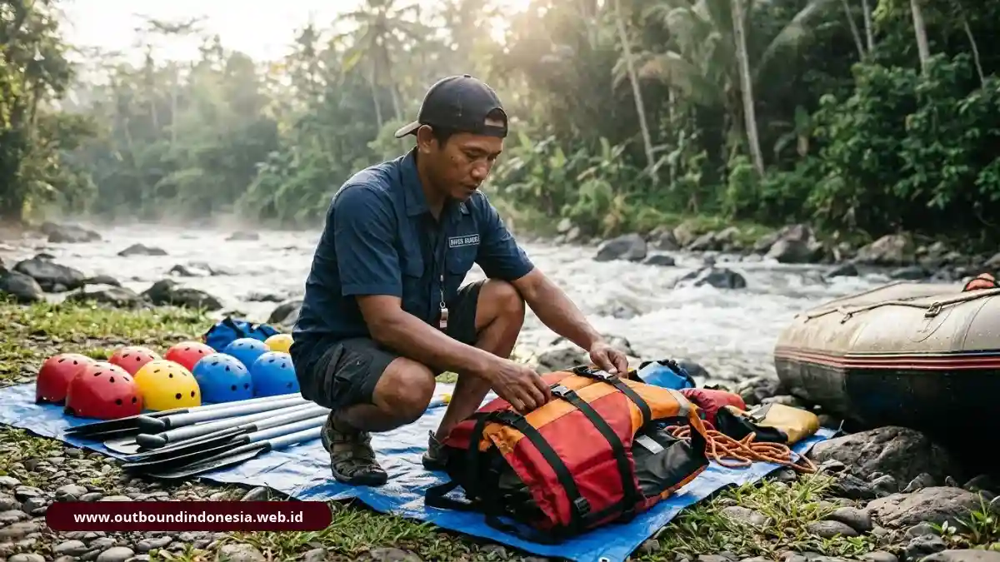

Kriteria memilih vendor outbound kantor meliputi badan hukum PT atau CV, fasilitator bersertifikat AELI atau BNSP, sistem keselamatan fisik dan psikologis, program berbasis analisis kebutuhan, serta rincian biaya yang terbuka dan terpisah per komponen.
Mengapa Legalitas Badan Hukum PT atau CV Menjadi Syarat Utama?
Vendor berbadan hukum PT atau CV dapat menerbitkan dokumen administrasi yang sah, sehingga pembayaran dapat dipertanggungjawabkan dalam audit internal maupun eksternal.
Bagi divisi Finance dan Procurement, kegiatan outbound tetap merupakan pengeluaran perusahaan yang harus punya dasar dokumen. Invoice resmi, faktur pajak, dan kontrak kerja menjadi bukti bahwa transaksi terjadi dengan pihak yang jelas.
Tanpa itu, perusahaan sulit menagih tanggung jawab jika terjadi pembatalan sepihak atau insiden di lapangan.
Dokumen yang layak diminta sebelum memutuskan:
- Akta pendirian atau keterangan badan usaha
- Nomor Induk Berusaha (NIB)
- NPWP badan usaha
- Contoh kontrak kerja sama dan syarat pembatalan
- Daftar klien korporat sebagai referensi
Satu catatan penting: legalitas membuktikan keabsahan administrasi, bukan otomatis kualitas program. Kriteria berikutnya tetap perlu diperiksa cermat.
Apa Beda Pemandu Biasa dan Fasilitator Tersertifikasi?
Fasilitator tersertifikasi telah diuji kompetensinya oleh lembaga atau standar resmi, sedangkan pemandu biasa umumnya hanya memandu aktivitas tanpa kemampuan memfasilitasi pembelajaran.
Rujukan sertifikasi yang diakui secara nasional di bidang ini adalah Asosiasi Experiential Learning Indonesia (AELI) dan BNSP. Selain itu terdapat SKKNI Nomor 119 Tahun 2024 untuk bidang Experiential Learning serta jenjang KKNI 4 dan 5 yang menggambarkan tingkat kompetensi penguasaan.
Pemerintah juga mendorong sertifikasi ini sebagai salah satu upaya menurunkan angka kecelakaan kegiatan di lapangan.
Cara memverifikasinya sederhana: minta nama fasilitator yang akan bertugas di lapangan, bukan hanya nama perusahaannya, lalu minta salinan sertifikat dan periksa masa berlakunya. Tanyakan juga pengalaman fasilitator pada industri yang mirip dengan profil perusahaan Anda.
Perlu dipahami bahwa sertifikat penting tetapi tidak menggantikan rekam jejak nyata. Gabungkan keduanya saat menilai calon mitra.
Bagaimana Menilai Manajemen Risiko dan Standar Keselamatan Vendor?
Penilaian keselamatan mencakup dua lapisan utama: keselamatan fisik untuk mencegah cedera, dan keselamatan psikologis agar peserta berani belajar tanpa takut dipermalukan.

Pemeriksaan perlengkapan keselamatan helm dan life jacket sebelum kegiatan rafting outboundKeselamatan Fisik
Minta bukti tertulis untuk hal-hal berikut:
- Peralatan berstandar dengan jadwal inspeksi rutin
- Daftar periksa kondisi bus dan kesiapan tour leader
- River guide bersertifikat untuk aktivitas arung jeram/rafting
- Tim medis atau P3K bersiaga di lokasi kegiatan
- Jalur dan protokol evakuasi darurat yang jelas
- Asuransi jiwa khusus kegiatan luar ruang
Keselamatan Psikologis
Sesi refleksi harus bebas dari intimidasi dan kritik personal. Peserta yang merasa aman lebih mudah mengakui kesalahan dan berpartisipasi aktif. Vendor yang mengandalkan hukuman atau sindiran untuk "memotivasi" patut dicurigai, karena pendekatan itu justru dapat merusak hubungan kerja.
Sebagai contoh konkret, Jelajah Outbound memberikan prioritas utama pada keselamatan peserta dan perlindungan asuransi jiwa untuk kegiatan-kegiatan berisiko tinggi, sementara Oase Indonesia menerapkan metodologi analisis kebutuhan yang komprehensif serta memiliki sertifikasi resmi dari BNSP. Contoh ini menunjukkan jenis informasi yang layak diminta, bukan jaminan otomatis atas hasil.
Mengapa Program Harus Berbasis Training Need Analysis?
Training Need Analysis (TNA) memastikan isi program menjawab kesenjangan kompetensi nyata, sehingga perusahaan tidak membayar paket seragam yang tidak relevan dengan masalah kantor.
TNA biasanya berupa wawancara singkat, kuesioner, atau diskusi terarah dengan atasan tim. Hasilnya menentukan pemilihan aktivitas simulasi, urutan sesi, dan tema refleksi (debriefing).
Misalnya, tim yang sering terlambat serah terima pekerjaan memerlukan simulasi koordinasi dan alur komunikasi, sedangkan tim baru terbentuk lebih membutuhkan penguatan rasa saling percaya.
Tanda vendor yang kaku:
- Menawarkan paket yang sama persis untuk semua klien
- Tidak menanyakan latar belakang atau komposisi peserta
- Tidak bersedia mengubah susunan urutan aktivitas
- Tidak menyiapkan materi tindak lanjut setelah acara selesai
Sebaliknya, vendor yang fleksibel akan bertanya tentang tujuan strategis, profil peserta, dan kondisi tim sebelum mengirimkan penawaran proposal.
Bagaimana Mencegah Biaya Siluman pada Penawaran Vendor?
Cegah biaya siluman dengan meminta penawaran yang memisahkan setiap komponen biaya secara transparan, lalu mencocokkannya dengan rincian tertulis di kontrak perjanjian kerja sama.
Penawaran yang jujur memuat komponen terpisah, misalnya:
- Sewa lokasi dan arena lapangan privat
- Konsumsi makan utama dan coffee break
- Akomodasi penginapan (kamar/tenda/resort)
- Sound system dan perlengkapan panggung/backdrop
- Peralatan simulasi atau aktivitas teknis
- Transportasi lokal di area kegiatan
- Premi asuransi kecelakaan/jiwa
- Honor fasilitator utama dan tim pendukung
Pertanyaan Kritis Sebelum Menyetujui Kontrak:
- Biaya apa saja yang belum termasuk dalam harga paket penawaran?
- Apakah ada penyesuaian biaya tambahan jika terjadi perubahan jumlah peserta mendadak?
- Bagaimana ketentuan kebijakan pembatalan dan perubahan jadwal acara akibat cuaca ekstrem?
- Apakah nilai yang tertera sudah termasuk kewajiban pajak (PPN/PPh) atau ditambahkan terpisah?
Bandingkan minimal tiga penawaran dari vendor berbeda dengan format yang seragam. Selisih harga besar di pasar sering kali berasal dari komponen penting yang sengaja tidak dicantumkan, bukan murni efisiensi kerja vendor.
Bagaimana Menyusun Lembar Skor Evaluasi Sederhana?
Lembar skor memberi bobot terukur pada setiap kriteria sehingga keputusan pemilihan vendor dapat dipertanggungjawabkan secara transparan kepada manajemen puncak dan tim auditor internal.
| Kriteria Evaluasi | Contoh Bobot | Fokus Pemeriksaan |
|---|---|---|
| Legalitas dan Dokumen Administrasi | 20% | PT/CV, NIB, NPWP, rekening bank perusahaan |
| Kompetensi dan Sertifikasi Fasilitator | 25% | Sertifikat AELI / BNSP, portofolio industri |
| Keselamatan Fisik dan Psikologis | 25% | Inspeksi alat, pemandu bersertifikat, tim medis, asuransi |
| Kesesuaian Program dengan TNA | 15% | Kustomisasi modul sesuai gap kompetensi tim |
| Transparansi Biaya dan Kontrak | 15% | Rincian terpisah per pos pengeluaran, kepastian pajak |
Bobot di atas adalah acuan standar. Perusahaan dengan rencana kegiatan berisiko tinggi seperti arung jeram (rafting) atau mountaineering dapat menaikkan porsi bobot keselamatan menjadi lebih besar.
Dalam konteks statistik pengadaan, penggunaan lembar penilaian yang seragam memfasilitasi perbandingan antara berbagai vendor dengan cara yang lebih objektif, sesuai dengan standar yang telah diakui secara luas dalam praktik evaluasi penyedia layanan korporat.
Kesimpulan Praktis
Gunakan lima kriteria sebagai saringan berurutan: dokumen legal, sertifikasi fasilitator, prosedur keselamatan, kesesuaian program, lalu rincian biaya. Vendor yang lolos kelimanya layak dimasukkan ke dalam daftar shortlist resmi perusahaan.
- Minta dokumen badan usaha dan NIB sebelum mulai membahas nominal harga.
- Verifikasi sertifikat fasilitator yang benar-benar akan ditugaskan di lapangan.
- Tuntut rencana keselamatan tertulis, termasuk jaminan asuransi dan jalur evakuasi darurat.
- Pilih vendor yang melakukan TNA awal, bukan yang sekadar menawarkan brosur paket seragam.
- Bandingkan penawaran dengan format rincian biaya per komponen yang setara.
Informasi dalam artikel ini bersifat edukasi umum pengadaan korporat. Konfirmasi persyaratan hukum dan keselamatan yang berlaku untuk kegiatan Anda kepada pihak berwenang atau konsultan terkait.

Tim Outbound Indonesia
Auditor keselamatan kegiatan luar ruang, trainer tersertifikasi BNSP, dan konsultan procurement corporate training.